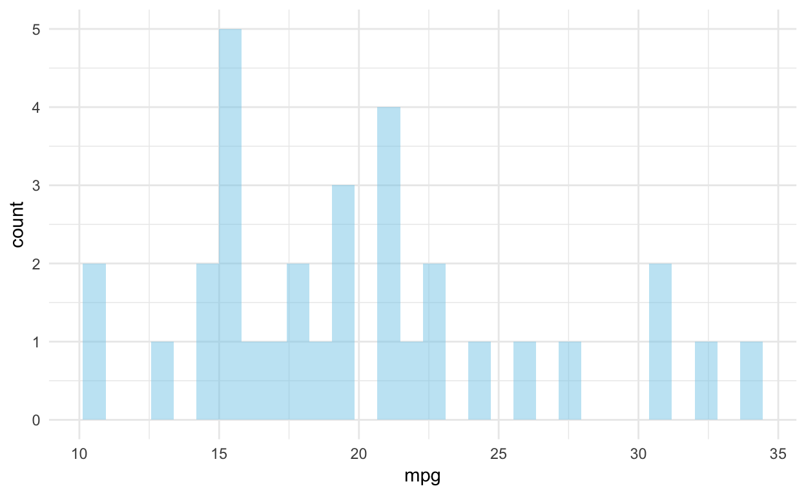

html_document: options
code_folding: "hide" - hides all code in document but provides drop down menu at the top of the document to reveal codetheme: sandstone - theme name
highlight: - syntax highlighting style
output: prettydoc::html_pretty: theme: cayman highlight: githuboutput: rmdformats::material[link](#link)
Since R Markdown use the bootstrap framework under the hood. It is possible to benefit its powerful grid system. Basically, you can consider that your row is divided in 12 subunits of same width. You can then choose to use only a few of this subunits.
Here, I use 3 subunits of size 4 (4x3=12). The last column is used for a plot. You can read more about the grid system here. I got this result showing the following code in my R Markdown document.

Save space in your document using buttons or tabs for sub chapters. Add this code at the end of your title:
A first section
Since R Markdown use the bootstrap framework under the hood. It is possible to benefit its powerful grid system. Basically, you can consider that your row is divided in 12 subunits of same width. You can then choose to use only a few of this subunits.
Here, I use 3 subunits of size 4 (4x3=12). The last column is used for a plot. You can read more about the grid system here. I got this result showing the following code in my R Markdown document.
CSS for Customizing Buttons:
.btn {
border-width: 0 0px 0px 0px;
font-weight: normal;
text-transform: ;
}
.btn-default {
color: #2ecc71;
background-color: #ffffff;
border-color: #ffffff;
}
datatable(mtcars, rownames = FALSE, filter="top", options = list(pageLength = 5, scrollX=T) )
p <- gapminder %>%
filter(year==1977) %>%
ggplot( aes(gdpPercap, lifeExp, size = pop, color=continent)) +
geom_point() +
scale_x_log10() +
theme_bw()
ggplotly(p)
* Name your .rmd file "index.rmd", save it to a folder, and knit to create index.html
* Create a repository on github using your working folder
* On your github onlnie repo, go to _Settings_ -> _Github Pages_ -> _Source_ -> _Master Branch_ -> _Save_
* Wait a little and your .html file will be available at username.github.io/repoNameThe field of statistics is the science of learning from data. When statistical principles are correctly applied, statistical analyses tend to produce accurate results. What’s more, the analyses even account for real-world uncertainty in order to calculate the probability of being incorrect.
Statisticians offer essential insight in determining which data, analyses, and conclusions are trustworthy. A statistician can be a study’s guide through a minefield of potential pitfalls, any of which could produce misleading conclusions.
Statistics … the most important science in the whole world: for upon it depends the practical application of every other science and of every art; the one science essential to all political and social administration, all education, all organisation based upon experience, for it only gives the results of our experience.
While the individual man is an insoluble puzzle, in the aggregate he becomes a mathematical certainty. You can, for example, never foretell what any one man will be up to, but you can say with precision what an average number will be up to. Individuals vary, but percentages remain constant. So says the statistician.
The greatest moments are those when you see the result pop up in a graph or in your statistical analysis - that moment you realize you know something no one else does and you get the pleasure of thinking about how to tell them.
Cognitive psychology tells us that the unaided human mind is vulnerable to many fallacies and illusions because of its reliance on its memory for vivid anecdotes rather than systematic statistics
The subjectivist (i.e. Bayesian) states his judgments, whereas the objectivist sweeps them under the carpet by calling assumptions knowledge, and he basks in the glorious objectivity of science.
Conducting data analysis is like drinking a fine wine. It is important to swirl and sniff the wine, to unpack the complex bouquet and to appreciate the experience. Gulping the wine doesn’t work.
To call in the statistician after the experiment is done may be no more than asking him to perform a post-mortem examination: he may be able to say what the experiment died of.
The combination of some data and an aching desire for an answer does not ensure that a reasonable answer can be extracted from a given body of data.
Correlation doesn’t imply causation, but it does waggle its eyebrows suggestively and gesture furtively while mouthing ‘look over there’
An approximate answer to the right problem is worth a good deal more than an exact answer to an approximate problem.
Statistical Thinking will one day be as necessary for efficient citizenship as the ability to read and write.
The statistician cannot evade the responsibility for understanding the process he applies or recommends.
Statistics - a subject which most statisticians find difficult but which many physicians are experts on.
The greatest value of a picture is when it forces us to notice what we never expected to see.
Data do not speak for themselves - they need context, and they need skeptical evaluation.
There are no routine statistical questions, only questionable statistical routines.
To find out what happens when you change something, it is necessary to change it.
George Box, Stuart Hunter, & William Gordon Hunter
It is the mark of a truly intelligent person to be moved by statistics.
The individual source of the statistics may easily be the weakest link.
It’s easy to lie with statistics; it’s easier to lie without them.
Aggregate statistics can sometimes mask important information
If you torture the data enough, nature will always confess.
We are drowning in information and starving for knowledge.
Prediction is very difficult, especially about the future.
Those who ignore statistics are condemned to reinvent it.
Strange events permit themselves the luxury of occurring
All generalizations are false, including this one.
Absence of evidence is not evidence of absence
In God we trust. All others must bring data.
All models are wrong, but some are useful
Figures don’t lie, but liars do figure.
Statistics is the grammar of science
The plural of anecdote is not data.
It depends.